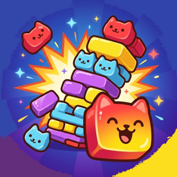

ねこブロック サポート
猫のゼリーブロックをそろえて消すブロックパズル
遊び方
- 下に出てくる3つのブロックを、指でつまんで 8×8 の盤に置きます。
- 横の行か縦の列がブロックでいっぱいになると、その列が消えて点数が入ります。何列も同時に消したり、続けて消したり(コンボ)すると、点数が大きく増えます。
- 3つとも置くと、次の3つが出てきます。どのブロックも置けなくなったらおしまいです。
- 遊び方は「∞ エンドレス」「かたちモード」「ミッション」の3つ。点数や★で、新しいブロックのデザインが解放されます(設定で選べます)。
よくある質問
Q. 音が鳴りません
iPhone のマナーモード(消音)がオンのときは音が鳴りません。アプリの「設定」で BGM・効果音がオンになっているかもご確認ください。
Q. 広告の表示を変えたい
アプリの「設定 → 広告の同意設定」、または iPhone の「設定 → プライバシーとセキュリティ → トラッキング」から変更できます。
Q. 記録をリセットしたい
アプリの「設定 → 記録をリセット」から行えます。元に戻せないのでご注意ください。
Q. 機種変更で記録を引き継げますか
記録は端末内にのみ保存しているため、現在は引き継ぎに対応していません。
お問い合わせ
不具合のご報告やご要望は、下記までお気軽にどうぞ。
お使いの iPhone の機種・iOS のバージョン・遊んでいたモードを添えていただけると助かります。